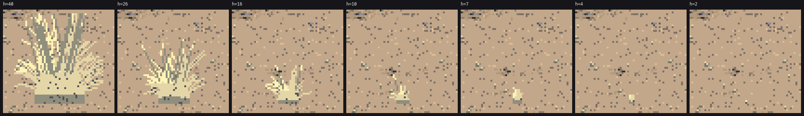
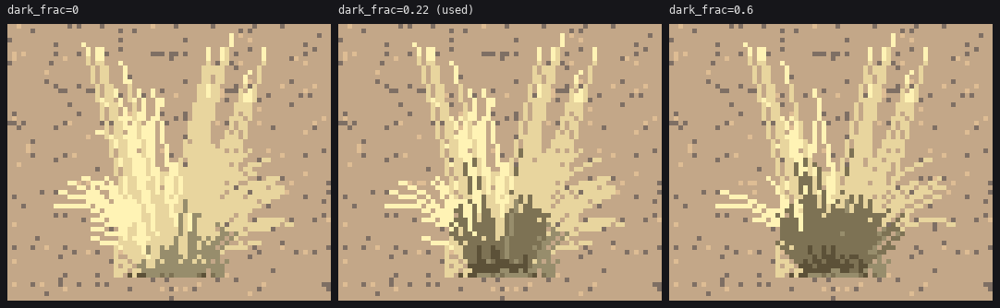
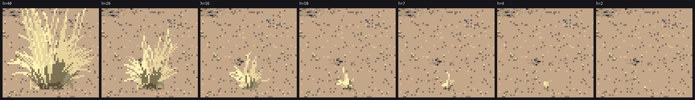

4. The bunchgrass tussock
Ready from 6 to 40 px. Placement is partial: the critic still saw even spacing.
Bluebunch wheatgrass grows in separate tussocks, 0.4 to 0.8 m tall, with bare soil between. They're blue-green in spring and straw by July, with seed stalks standing above them in summer.
What I got wrong first: the comb
I began from my stage-0 copy of Ferrari's V11AM tufts: every blade a dark line with a 1-px lit partner. Those tufts are backlit. With the sun in front of the grass I reversed it, lit blade and dark gap. Pairing every lit pixel with a dark one turned each tussock into a grey comb:

The first parkland scene. The tussocks are grey combs, the same value as their own shadows.
Then I looked at V16PM's golden bank, which is also cured grass in sun. It is a flat lit ochre mass with a few dark strands, most of it flat light. The texture lives in the dark strands, and there are few of them.
The iterations, one tussock at seven sizes each time:



a: comb, with a hard dark base block. b: a loose straw fill behind the blades, but the base is still a block. c: lit mass with dark strands, but the strands were drawn first and got covered. d: dark strands drawn over the mass, low only. This is the one I kept.
The code
grass.paint_tussock, the near painter (height 6 px and up):
# V16PM's grass, read into a tussock: a lit straw mass whose texture is carried by a
# FEW dark strands; the side away from the sun a step down; a ragged dark foot.
rx, ry = w * 0.42, h * 0.6
for y in range(int(gy - ry), gy + 1):
for x in range(int(cx - rx), int(cx + rx) + 1):
u, v = (x - cx) / rx, (gy - y) / ry
if u * u + v * v <= 1.0 and rng.random() < 0.6:
cv.px(x, y, sp.GRASS, p["lit_step"] - 1 if u * ls > -0.3 else p["mid_step"])
order = list(range(len(blades)))
dark = set(i for i in order if rng.random() < p["dark_frac"])
for i in sorted(order, key=lambda i: (i in dark)): # dark strands last, on top
pix = blades[i]
n_ = len(pix)
u = (pix[-1][0] - cx) / max(1.0, rx) * ls # >0: the blade leans sunward
for j, (x, y) in enumerate(pix):
t = j / max(1, n_ - 1)
if i in dark:
if t > 0.6 or t < 0.05:
continue # dark only in the lower 60%
s = p["dark_step"] + 1 if t > 0.15 else p["dark_step"]
else:
if t > 0.45:
s = p["lit_step"] if u > -0.25 else p["lit_step"] - 1
elif t > 0.15:
s = p["lit_step"] - 1 if u > -0.5 else p["mid_step"]
else:
s = p["mid_step"]
cv.px(x, y, sp.GRASS, s)
for x in range(int(cx - w * 0.3), int(cx + w * 0.3) + 1): # the ragged foot: ground line only
if rng.random() < 0.6:
cv.px(x, gy, sp.GRASS, p["dark_step"] + (rng.random() < 0.4))
(The comment in the study's copy still says "dark strands first, lit blades cross over them". That was true of version c. The sort key puts the dark ones last, and the comment is stale.)
The blades come from the same tuft_blades and tip_arc as the stage-0 copy (page 2), with about w·h/9 blades. The one number that matters is dark_frac:

figs.fig_tussock. With no dark strands the tussock is a lit smear with no structure. At 0.6 it's a dark bush with light hair. At 0.22 it's straw in sun.
Two palette facts make or break it:
- Straw must be paler and yellower than the loess. For a while they were within five levels of each other, and the tussocks vanished into the ground. Now GRASS is (222, 202, 146) and GROUND is (192, 162, 124).
- Lit tussocks stay in steps 3 to 4 except at the foot and in the strands. The two families don't touch.
Every size

s2_grass.py: heights 40, 26, 16, 10, 7, 4 and 2 px.
- 6 px and up: the painter above.
- 4 to 6 px: a fountain dome of straw with strands fanning to the rim, each with a dark partner on the shadow side.
- Under 4 px: a lit straw pixel over a darker foot. It never vanishes.
In a wide view, small tussocks mustn't each be a dark-footed fleck with a shadow, or the ground turns to salt and pepper (sheet F, first version). So in scene.paint_scene, tussocks under 5.5 px merge into the ground's tone. Most are dropped, and the rest are one soft lit fleck with no foot and no shadow. The keep probability ramps with size so the hand-off doesn't pop between zoom steps:
if kind == "grass" and hpx < 5.5:
if srng.random() > np.clip((hpx - 1.5) / 3.5, 0.2, 1.0):
continue
spr = sp.Canvas(3, 3)
spr.px(1, 2, GRASS, 3)
if hpx >= 3:
spr.px(1, 1, GRASS, 4)
Placement: drifts, not pairs
The critic's round 3: "Nearly every bush has one tuft at its foot." Grass grows in drifts, in swales and lanes between shrubs, and rarely against a shrub's foot. So tussocks are scattered 1.6× too dense, then thinned by a low-frequency drift field, with a quarter kept anyway, and anything within 0.55 m of a shrub is dropped (a k-d tree over the shrub positions):
g = np.array(scatter(cam, pl["grass"] * 1.6, seed + 303, zmax=_zvis(cam, pl["grass_size"][1])))
drift = world.fbm(g[:, 0], g[:, 1], 5.0, seed + 404)
keep = drift >= 0.5 - pl.get("grass_drift", 0.12) + 0.25 * (1 - g[:, 2])
keep |= world._hash((g[:, 0] * 100).astype(np.int64), (g[:, 1] * 100).astype(np.int64), seed) < 0.25
d, _ = tree.query(g[:, :2])
keep &= d >= 0.55
(The first version did this in a Python loop, one fbm call and one distance-to-every-shrub per tussock. The perspective render went from 10 s to over 2 minutes, and I killed it.)
Where it falls short
- Even spacing. The base is still a jittered grid (
scene.scatter), and thinning it doesn't make true clumps. In the parkland hero the tussocks sit in rows like a planted field. The fix I'd try is Neyman–Scott clustering (parents, then children around each parent), not thinning. - In the spring hero the green tussocks read well, but every near tussock is the same fountain. Idaho fescue (
kind="fescue") only changes the blade density. It needs its own finer, lower, denser form. - The paint_tussock docstring still describes the old paired-blade painter.